WebMatrix 2 RC でサクッとWebサイトをオシャレにしてみた
公開日：
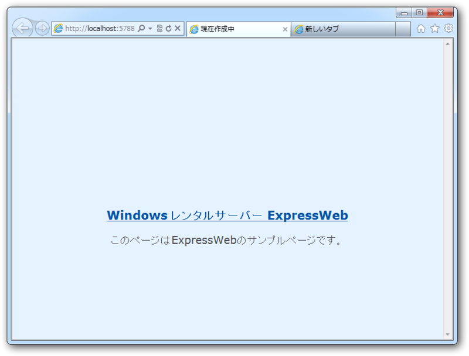
みてくれたまえ。これが昨日までの http://download.daruyanagi.net/ だ。ワイルドだろ？*1 さすがにこれを放置するのも何なので、WebMatrix 2.0 Release Candidate でキレイにしてみることにした。
なにはともあれインストール
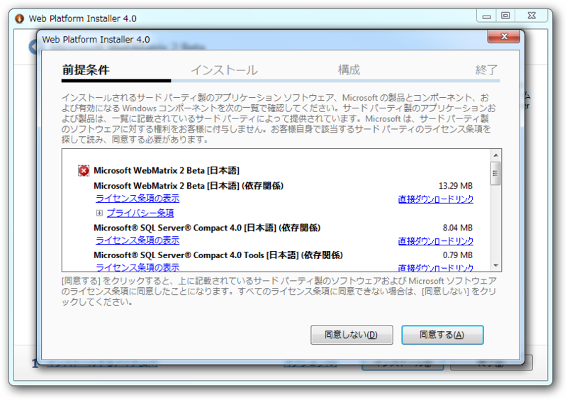
まず、WebMatrix 2 を
WebMatrix 2
からダウンロードしてくれたまえ。うちの場合は、なんか2・3回インストーラーを実行するハメになったけど（なんでだ？）、まぁ、すんなり入る。
Webサイト側でリモート管理を有効にする
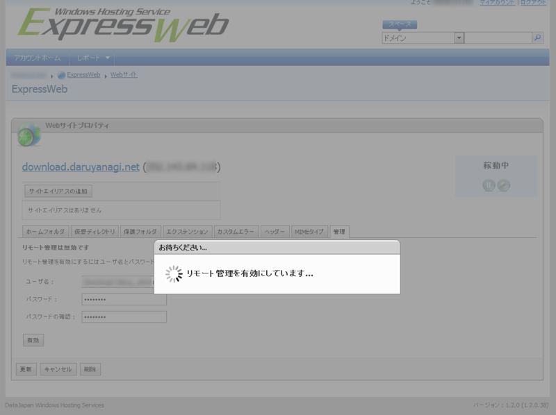
レンタルサーバーはもちろん、ASP.NET がお安く使える
高機能・激安 Windows レンタルサーバー ExpressWeb
を使ってるよな？ Web配置で楽をしましょう。
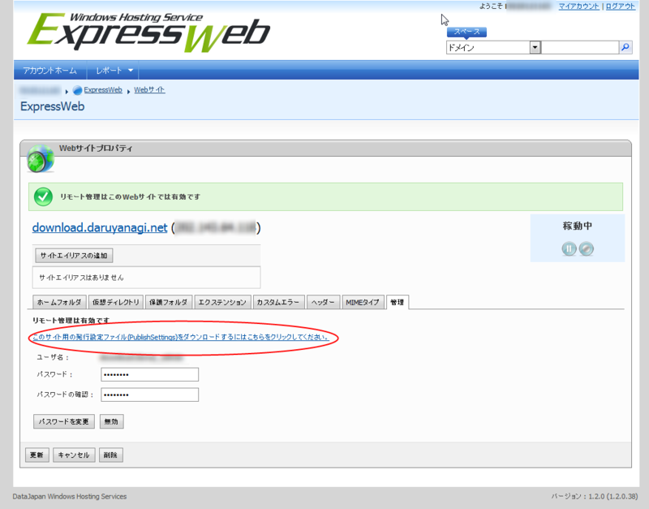
設定ファイルをダウンロードしておくとあとで捗る。
Webサイトのダウンロード
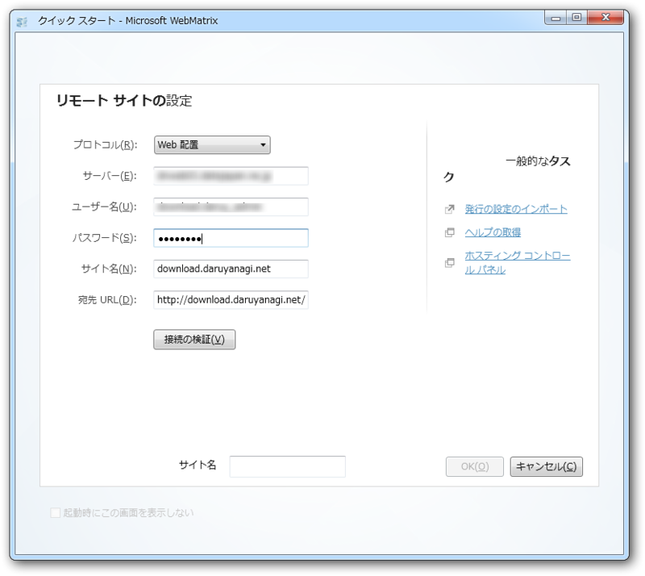
WebMatrix でリモートサイトを開く。さっきダウンロードしておいた設定ファイルを読みこめば、かなり楽ちん。リモート管理のアカウント情報を入力するだけで済む。
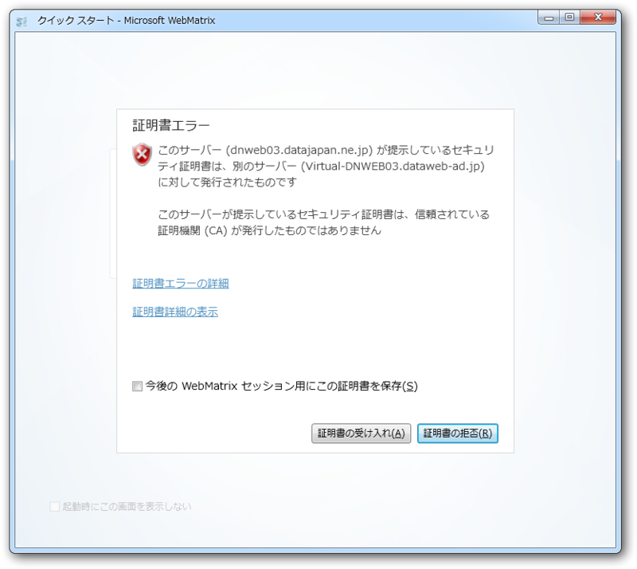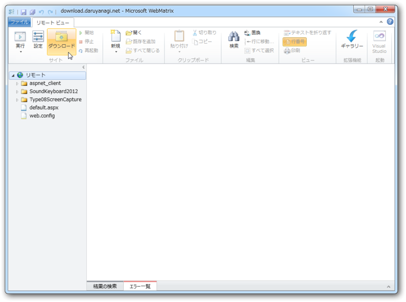
無事接続できた。このまま作業をしてもいいのだけど、やっぱりローカルにコピーを作っておいたほうが何かと安全なのでダウンロードしておく。
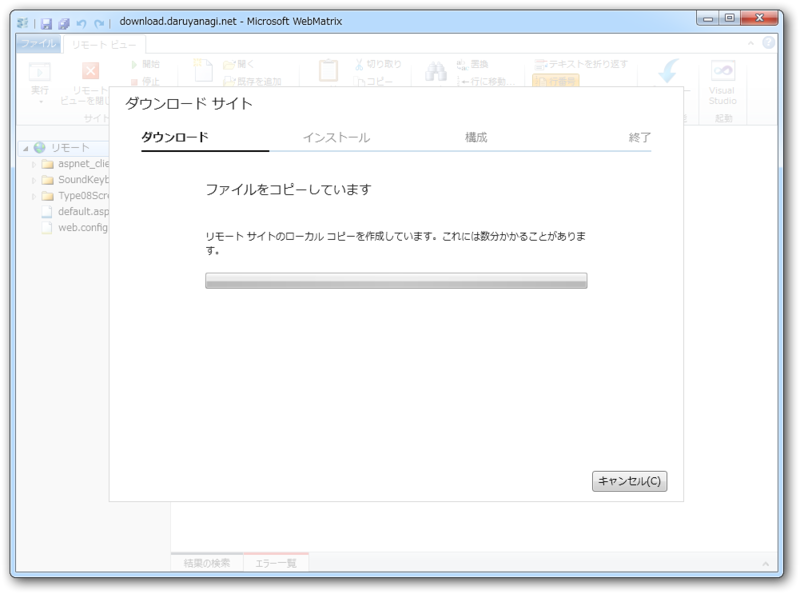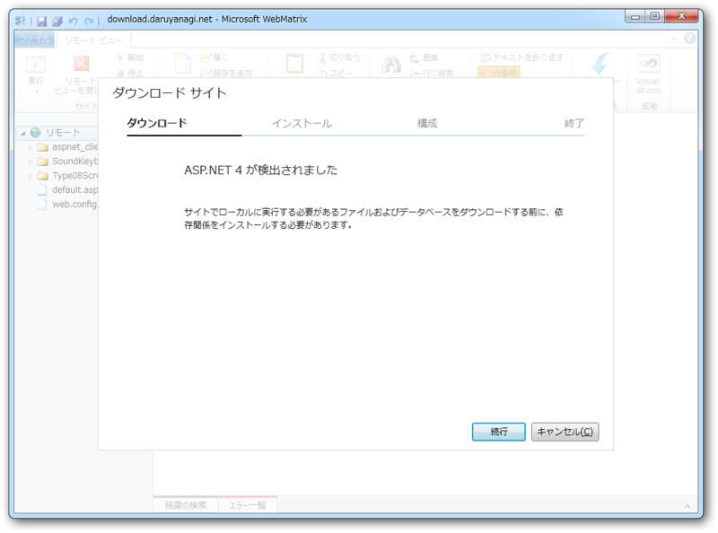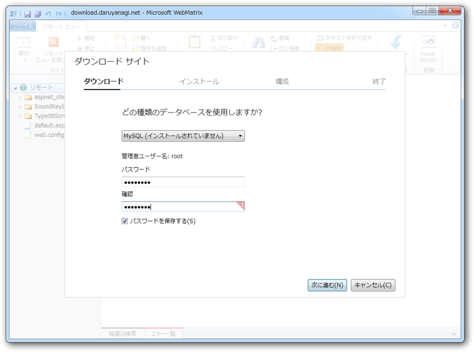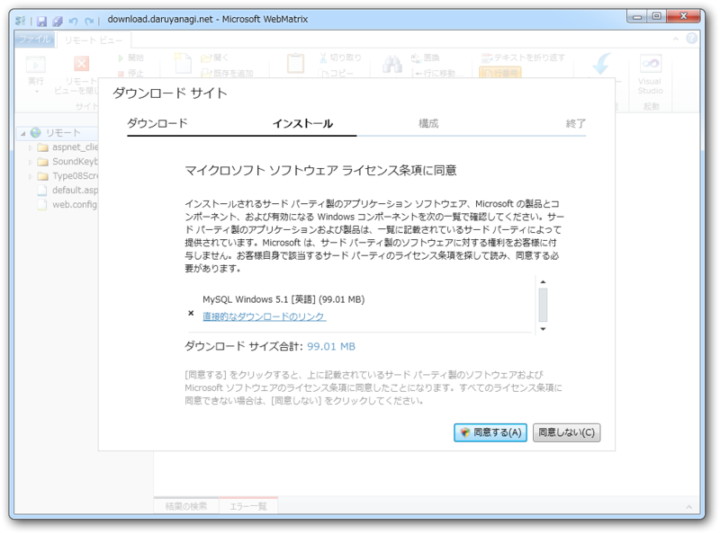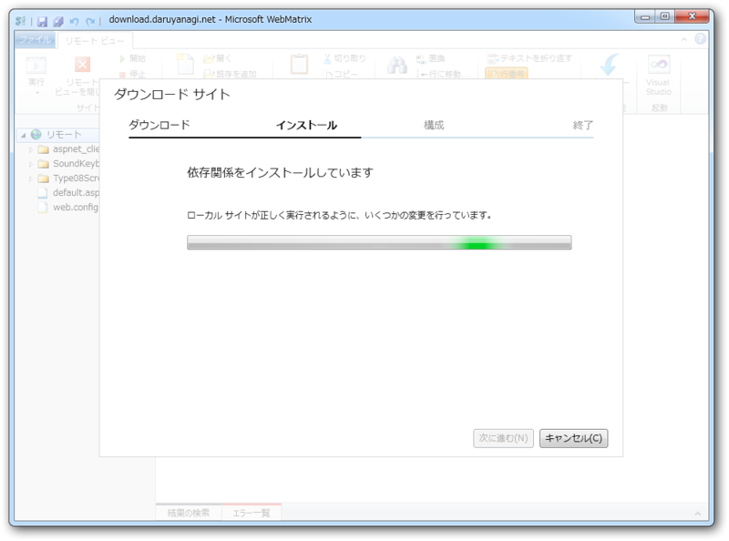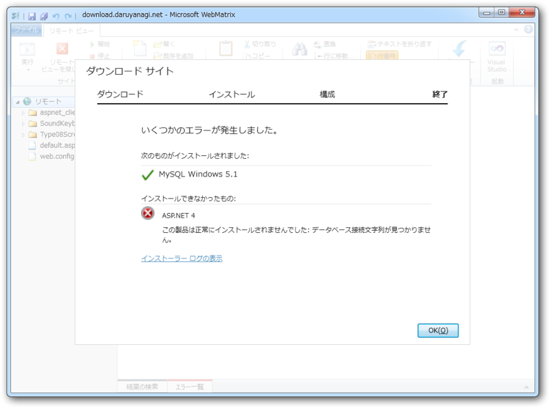
これがやたら時間かかる。なぜか使ってもいない MySQL もインストールされるし。まぁ、細かいことは気にしない。 ASP.NET 4 のインストールにも失敗したけど、とくに問題なく動いているみたい。
@daruyanagi そういう時は、MySQLのサイトで日本のサーバーから落とすのが早いっす。
— ウェブマトリクスマンさん (@WebMatrixMan) 6月 19, 2012WebMatrixman はほんとデキる子だな。
Git for WebMatrix のインストール
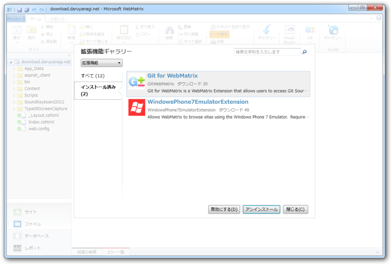
この作業はスキップしていいのだけど、どうせならバージョン管理できるようにしておけばロールバックとか楽になるよね。というわけで、拡張機能ギャラリーから「Git for WebMatrix」をインストールしておく。
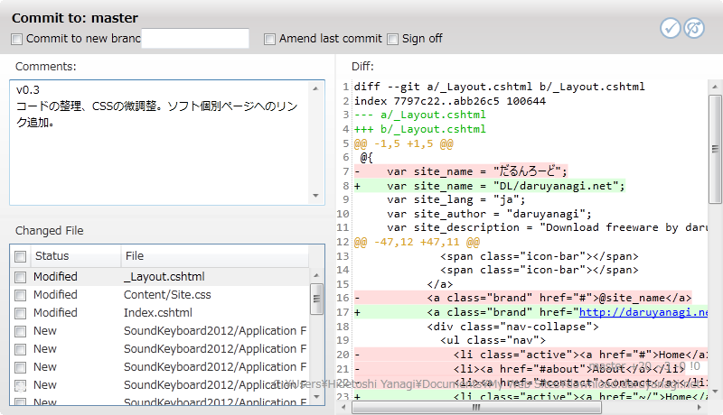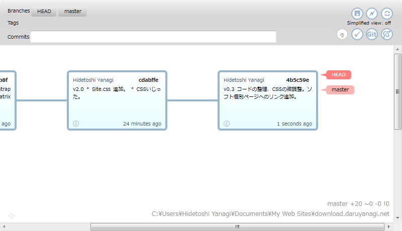
リリース当初はハングアップしたりして大変だったけど、週明けのバージョンアップでかなり使えるようになった。
Twitter Bootstrap のインストール
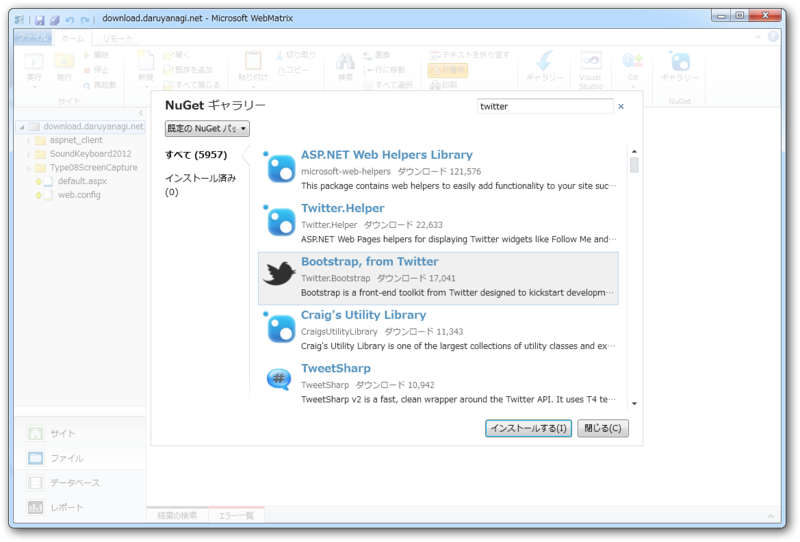
WebMatrix 2 では NuGet もよりお手軽に利用できるようになっている。どこかの誰かが作ってくれた便利ツールが自由に使えるというわけだ！ 使わないなんて損、損。今回は、デザインセンスのない開発者御用達のCSSフレームワーク Twitter Bootstrap を利用してみた。 WebMatrix 2 は LESS なんかも扱えるから、今後はカスタマイズ可能な Bootstrap なんかも利用できるようになるかも。夢が広がる……
コーディング
さて、ようやくコーディングのお時間なのだけど……基本的には Bootstrap, from Twitter （サンプル）のソースコードをガバっとコピペしてチョチョイのちょいとイジるだけ。一瞬で終わってしまった。
_Layout.cshtml
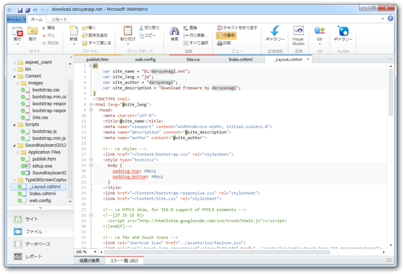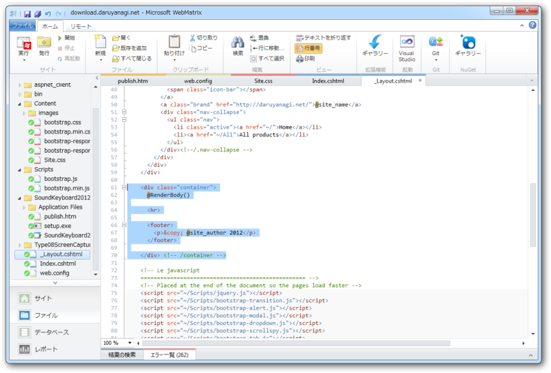
Webページのひな形。
それぞれのWebページの内容を挿入する場所に`@RenderBody()`を埋め込んでおく。ついでに、サイト名や作者名なんかは冒頭の`@{ }`セクションで変数にしておくと、あとで管理するのが楽になる。スクリプトやスタイルシートのパスを /Scripts や /Content に書き換えておくのを忘れずに。
Index.cshtml
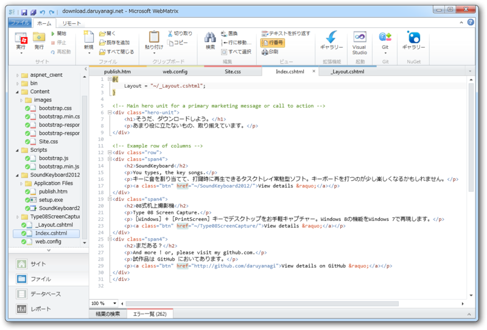
@{
Layout = "~/_Layout.cshtml";
}
でレイアウトを指定し、レイアウトの `@RenderBody()` を書いていく感じ。 Bootstrap, from Twitter のソースコードで言えば、 `<div class="container">` のヘッダー以外の部分をココにコピーして自分なりに書き換えていく。
あとは、同じ要領でページを増やしていけばいい。 About.cshtml を書けば download.daruyanagi.net/About になるし、 Contact.cshtml を書けば download.daruyanagi.net/Contact になる。レイアウトを指定すれば、見栄えも共通化できる。
完成！
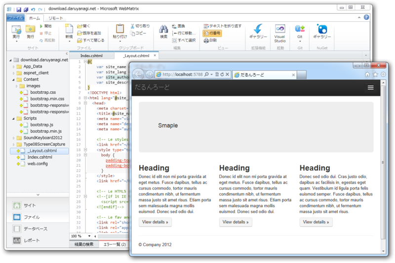
WebMatrix だったら、IE/Chrome/Firefoxどころか、モバイルOSシミュレーターでもテストできる！ Bootstrap は MediaQuery でモバイルからも快適に閲覧できるけど、それをシミュレーターで確かめられる。
実際のコーディングはものの10分ぐらい。動的サイトも作れるし、その時、フレームワークをASP.NET/PHP/Node.js のなかから自由に選べるのがナイス。 Azure へのデプロイもできるみたいなので、次は試してみたい。
*1:TVみないので、ネタに影響されるのが人よりかなり遅れております